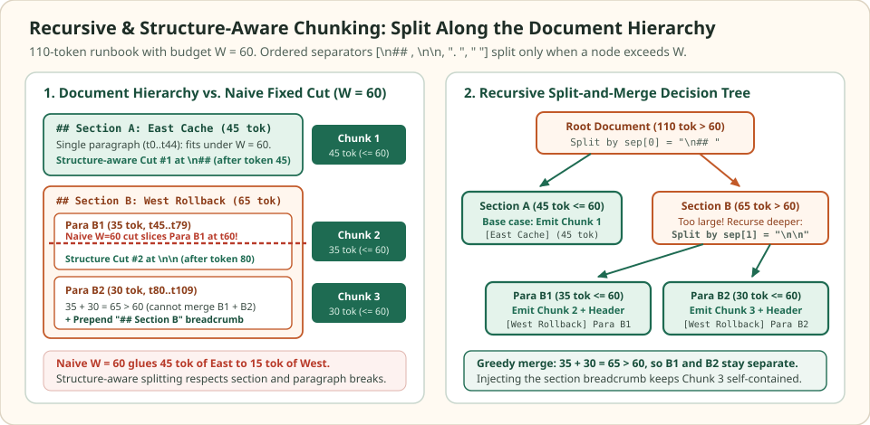

Recursive and structure-aware chunking: split along the document hierarchy
Technical documents organize meaning through explicit structural delimiters: Markdown headings (##, ###), paragraph breaks (\n\n), list items, fenced code blocks, and sentence periods. Whereas fixed-size windowing cuts blindly at every $W$-th token, recursive and structure-aware chunkers walk an ordered hierarchy of separators—splitting at the coarsest boundary first and descending to finer separators only when a subtree still exceeds the token budget $W$.
Combining top-down splitting with bottom-up sibling merging and header breadcrumb injection keeps every chunk below $W$ tokens without blending unrelated sections or stranding leaf paragraphs without their parent heading context.
How a naive 60-token cut glues two sections together
110 tokens · budget W = 60 · two sections & three paragraphs
A $110$-token deployment runbook has two top-level sections under a chunk budget of $W = 60$ tokens: ## Section A: East Cache ($45$ tokens in a single paragraph) followed by ## Section B: West Rollback ($65$ tokens split across Para B1 of $35$ tokens and Para B2 of $30$ tokens).


Section B onto the end of Section A. The recursive splitter cuts at \n## first, emits Section A ($45 \le 60$) intact, and recurses on Section B ($65 > 60$) using \n\n to emit Para B1 ($35$) and Para B2 ($30$).When a fixed $60$-token window slices at token $60$, its first chunk merges all $45$ tokens of East Cache with the opening $15$ tokens of West Rollback, creating a chimeric vector that mentions both regions and pollutes retrieval for East-only or West-only queries. Furthermore, its second chunk ($t_{60}\dots t_{109}$) starts mid-sentence inside Para B1 without the ## Section B: West Rollback heading.
Comparison of naive fixed windowing (W = 60, O = 0) and recursive hierarchy-aware splitting (W = 60) on the 110-token runbook.
| Method & chunk ID | Token range | Token count | Separator boundary | Topic purity & heading context |
|---|---|---|---|---|
| Naive fixed, Chunk 0 | t0..t59 | 60 | Mid-sentence inside Para B1 | Mixed (45 tok East + 15 tok West) |
| Naive fixed, Chunk 1 | t60..t109 | 50 | End of document | Orphaned (missing Section B heading) |
| Recursive, Chunk 1 | t0..t44 | 45 | Level 0: \n## | Pure East Cache (heading intact) |
| Recursive, Chunk 2 | t45..t79 | 35 | Level 1: \n\n | Pure West Rollback Para B1 (+ heading) |
| Recursive, Chunk 3 | t80..t109 | 30 | End of document | Pure West Rollback Para B2 (+ breadcrumb) |
Scroll horizontally to compare the columns. Keyboard: focus the table, then use the left and right arrow keys.
The two-phase recursive algorithm: top-down split, bottom-up merge
A recursive text splitter is defined by a token length function $\ell(\cdot)$, a maximum chunk budget $W$, and an ordered separator hierarchy $\Sigma = (\sigma_1, \sigma_2, \dots, \sigma_m)$ arranged from coarsest structural boundary to finest fallback:
Given a text node $u$ and the remaining separator list $(\sigma_k, \dots, \sigma_m)$, the procedure executes two phases at recursion depth $k$:
- Top-down refinement: If $\ell(u) \le W$, return $[u]$ immediately. Otherwise, select the first separator $\sigma_k$ that occurs inside $u$ and split $u$ into child pieces $p_1, p_2, \dots, p_r$. For any child $p_i$ that still satisfies $\ell(p_i) > W$, recursively invoke the splitter on $p_i$ with the finer tail $(\sigma_{k+1}, \dots, \sigma_m)$ until every atomic piece has length $\le W$.
- Bottom-up greedy bin-packing: Consecutive small siblings $p_i, p_{i+1}, \dots, p_j$ produced at the same level are merged left-to-right into a single chunk as long as their combined token count (including the restored separator $\sigma_k$) obeys:
Without the bottom-up merge phase, splitting on \n\n would turn ten $8$-token bullet lines into ten tiny $8$-token vectors; greedy bin-packing packs seven of those bullets into a single coherent $56$-token chunk while still refusing to merge across a coarser \n## heading boundary.
| Tier & separator | Structural unit | When the splitter falls back past this tier |
|---|---|---|
Tier 1: \n## , \n### | Top-level and subsection headings | A single section or subsection exceeds $W$ tokens |
Tier 2: \n\n, \n | Paragraphs, list blocks, and line breaks | A single paragraph or list item exceeds $W$ tokens |
Tier 3: ". ", "? ", "! " | Individual prose sentences | A single run-on sentence or log line exceeds $W$ tokens |
Tier 4: " ", "" | Words and subword tokens | Unbroken base64 strings, minified JSON, or long URLs |
Protecting atomic structures: tables, code blocks, and lists
Generic newline splitting breaks down on two common technical artifacts: Markdown tables and fenced code blocks (```). In a Markdown table, the column names live only in row $0$ (| Flag | Default | Rollback |) followed by the delimiter row (|---|---|---|). If a table spans $90$ tokens and gets split on \n after token $60$, rows $5$–$8$ land in a second chunk as bare pipe-delimited cells (| --west-v2 | off | --west-v1 |) stripped of their column labels. Similarly, splitting source code on blank lines inside a function body separates local variables from the function signature and enclosing class name.
Structure-aware parsers (such as Markdown AST splitters and tree-sitter code chunkers) treat tables and syntax nodes as atomic units first. When a table or class definition genuinely exceeds $W$ tokens, the splitter partitions it along row or method boundaries and repeats the structural header—prepending the table header rows or the class/function signature—onto every continuation chunk so each piece remains interpretable in isolation.
Header breadcrumb injection keeps leaf chunks self-contained
Even when Para B2 (It must be reverted within 10 minutes if error rates exceed 2%..., $30$ tokens) is cut cleanly at a paragraph break, the paragraph itself may rely on pronouns or implicit scope defined in its parent headings (# West Deployment Guide $\to$ ## Section B: West Rollback). If embedded bare, Para B2 has weak lexical and semantic similarity to queries mentioning "West Rollback".
Header breadcrumb injection tracks the active heading stack $H = (h_1, h_2, \dots, h_d)$ during the tree traversal and prepends a compact ancestry prefix to every emitted chunk from that subtree, deducting the breadcrumb token cost $\ell(H)$ from the available body budget $W_{\text{body}} = W - \ell(H)$:
def word_count(text):
return len(text.split())
# Construct the 110-word runbook from the opening puzzle (W = 60)
sec_a = "## Section A: East Cache\n\n" + " ".join([f"east_{i}" for i in range(40)])
para_b1 = " ".join([f"west_b1_{i}" for i in range(30)])
para_b2 = " ".join([f"west_b2_{i}" for i in range(30)])
sec_b = f"## Section B: West Rollback\n\n{para_b1}\n\n{para_b2}"
doc = f"{sec_a}\n{sec_b}"
assert word_count(sec_a) == 45
assert word_count(sec_b) == 65
assert word_count(doc) == 110
def recursive_split(text, W, separators=("\n## ", "\n\n", ". ", " ")):
if word_count(text) <= W or not separators:
return [text.strip()]
sep = next((s for s in separators if s in text), None)
if sep is None:
return [text.strip()]
raw_parts = text.split(sep)
parts = [raw_parts[0]] + [
(sep.lstrip("\n") + p if sep.startswith("\n##") else p)
for p in raw_parts[1:]
]
refined = []
for p in parts:
if word_count(p) <= W:
refined.append(p.strip())
else:
refined.extend(recursive_split(p, W, separators[1:]))
# Bottom-up greedy merge of consecutive small siblings
merged, buf = [], ""
joiner = "\n\n" if "\n" in sep else sep
for piece in refined:
candidate = f"{buf}{joiner}{piece}" if buf else piece
if word_count(candidate) <= W:
buf = candidate
else:
if buf:
merged.append(buf)
buf = piece
if buf:
merged.append(buf)
return merged
chunks = recursive_split(doc, W=60)
assert [word_count(c) for c in chunks] == [45, 35, 30]
assert all("west_" not in chunks[0] and "east_" not in chunks[1] for _ in [0])
def split_markdown_with_breadcrumbs(md_text, W):
"""Propagate ## section headers onto every paragraph chunk in the section."""
emitted = []
for section in md_text.split("\n## "):
section = section if section.startswith("## ") else "## " + section
lines = section.split("\n\n")
header = lines[0].strip() # e.g., "## Section B: West Rollback"
body_budget = W - word_count(header)
body = "\n\n".join(lines[1:])
for sub in recursive_split(body, W=body_budget, separators=("\n\n", ". ", " ")):
emitted.append(f"{header}\n\n{sub}")
return emitted
bc_chunks = split_markdown_with_breadcrumbs(doc, W=60)
assert [word_count(c) for c in bc_chunks] == [45, 35, 35]
assert bc_chunks[2].startswith("## Section B: West Rollback\n\nwest_b2_0")
def split_table_with_header(table_md, max_rows_per_chunk=2):
"""Repeat the 2-line Markdown table header on every continuation chunk."""
lines = [ln.strip() for ln in table_md.strip().splitlines()]
header_block, data_rows = "\n".join(lines[:2]), lines[2:]
return [
header_block + "\n" + "\n".join(data_rows[i : i + max_rows_per_chunk])
for i in range(0, len(data_rows), max_rows_per_chunk)
]
table_md = """| Flag | Default | Rollback |
|---|---|---|
| --east-v1 | on | --east-v0 |
| --east-v2 | off | --east-v1 |
| --west-v2 | only | --west-v1 |"""
t_chunks = split_table_with_header(table_md, max_rows_per_chunk=2)
assert len(t_chunks) == 2 and t_chunks[1].startswith("| Flag | Default | Rollback |")
print("Recursive chunk sizes:", [word_count(c) for c in chunks])
print("Breadcrumb chunk sizes:", [word_count(c) for c in bc_chunks])Check the operating assumptions
What happens when a single paragraph of 180 tokens contains no newlines, and the budget is W = 60?
The recursive splitter tests \n## and \n\n, sees that the 180-token node still exceeds W = 60, and automatically descends to the sentence separator ". ". It splits the paragraph into individual sentences and greedily packs consecutive sentences into chunks of at most 60 tokens.
Why is bottom-up sibling merging required after splitting by a separator?
Splitting a section on \n\n breaks every short paragraph or list item into a separate fragment. Without greedily merging consecutive siblings back up to W, a sequence of ten 6-token paragraphs would produce ten fragmented 6-token embeddings instead of a single 60-token chunk.
How must the chunk budget W be adjusted when prepending a 12-token header breadcrumb to every leaf chunk?
The splitter must reserve the breadcrumb length up front and run the body split-and-merge pass against the effective budget W_body = W - 12. Otherwise, appending a 12-token breadcrumb to a 55-token body under W = 60 would push the final chunk to 67 tokens and overflow the embedding window.
Sources
- LangChain Documentation: RecursiveCharacterTextSplitter, hierarchical separator splitting and sibling merging.
- LlamaIndex Node Parsers,
MarkdownNodeParserand structure-aware header metadata propagation. - Tree-sitter Parsing System, concrete syntax trees for AST-aware source code chunking.